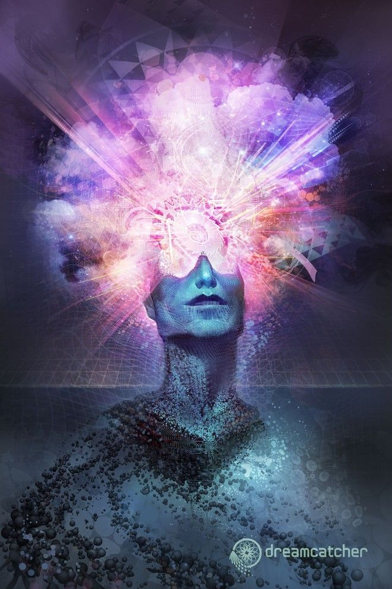

Millioner, milliarder eller trillioner av variasjoner. Men et sted vil det stoppe.
Fantasien din er begrenset fordi vi lever i en begrenset verden, et begrenset univers.
Begrensningene våre er basert på begrensede objekter som omgir oss.
Gjenstander som bare kan utformes eller formes på en begrenset mengde måter.
Det kan være tusenvis eller millioner av variasjoner, på så mange måter som det er i stand til å la objektet være til stede i virkeligheten.
Med å være tilstede i virkelighetens nåtid mener jeg at utformingen av objektet er under lovene som omhandler fysikk eller natur hvor objektet må passe inn i det eksakte miljøet det vil bli satt inn under.
Miljøet kan bare være annerledes på så mange begrensede måter. Gjenstander i det miljøet må svare og adlyde under dets fysiske og visuelle lover(hvordan den er utformet etter et begrenset antall mulige formasjoner).
Objekter må utvikle seg til ethvert miljø av en begrenset standard.
Slik at gjenstandene bestemmes av miljøet, på hvor mange begrensede formasjoner de kan være på.
Fantasien vår er mektig. Men hvis du tar perspektivet på fantasien til hele menneskeheten i løpet av en time av tiden bak i tid og legger sammen alle de forskjellige fantasiene i en eneste database. Kan du i teorien lagre hele fantasien til hvert eneste menneske i en maskin. Tenk deg å lagre all den historiske fantasien til alle mennesker fra år 0 til år 2020. Alle like fantasier vil bli skilt ut og kun de fantasiene som er av forskjellig karakter vil bli lagret. Og det har seg slik at mange mennesker har mye lik fantasi, men som oftest med en annen vri.
Hvert menneske har en stor ting til felles. At alle har evnen til å tenke likt. Ta en gruppe mennesker og bytt den med en annen gruppe, slik at endrer miljøet de befinner seg i.
De vil oppleve lignende dagligliv og med samme innflytelse slik at de opplever de samme fantasiene eller noe veldig sammenlignbart.
Etter hvert som tiden går, vil fantasien utvide seg i samme takt som med gjenstander og naturen..
Hvordan bestemme begrensningen.
En stein kan kun være i så mange former og i størrelser, en liten stein til en stein som dekker hele universet.
Begrensninger må deles inn i segmenter:
Det naturlige segmentet
Menneskeskapte produserte gjenstander
- har sine begrensninger av hvor store og så ulike designer/formasjoner
Begrensninger basert på mennesker
Begrensninger basert på naturen
Begrensninger er basert på hva som produseres enten av natur eller menneske.
Det er viktig å skille mellom fantasi og virkelighetens begrensninger.
Fantasiens begrensninger finnes det alle slags former og størrelser.
Del fantasien i åpenbart(fornuftig), meningsfullt og fullstendig ute av vår verden. Menneskeheten kan få de merkeligste ideer og forestillinger.
Åpenbart(fornuftig) er normal fantasi, noe vi sannsynligvis kan produsere. Av det som er nærliggende å ha i det miljøet, noe som har en mening. Noe som kan produseres for å bli satt foran oss.
Verden vi lever i er satt av menneskelige regler, et menneskelige øye. Vi bestemmer hva som er normalt eller ikke. Med dette perspektivet kan vi organisere de to begrensnings-segmentene. En som er normal fantasi (noe som har evnen til å være i live).
Og den andre er fantasien som ikke har noen grenser eller gir ingen mening. En fantasi som ikke har noe sted på jorden eller universet.
Det er et tredje alternativ, det vil si en blanding mellom de to, virkeligheten og ikke-virkeligheten.
Maskinintelligens.
Er det mulig å bygge en maskin med alt på jorden? Jeg mener formene og størrelsene innenfor grensene for hva som er mulig for et objekt? Kan du lage en algoritme om ett enkelt objekt som skal være i hvilken som helst form og størrelse? Enten det er innenfor det som er normalt, eller bare hver form og størrelse som er mulig(millioner/milliarder av design) i både et normalt(fornuftig/åpenbart) objekt og unormalt(ufornuftig) objekt.
Så er det en algoritme om hvert eneste objekt på jorden fra bergarter til datamaskiner.
Gjør dette etterpå med mennesker og dyr.
Begynn med en by, hva og hvor mange gjenstander som er der. Katalog alt. Algoritmene for hvert objekt. Hvor store og små er mulig, hvor mange design er mulig.

Prøv å se for deg fantasien til alle mennesker som har tenkt, som lever i nåtiden, putt alle disse fantasiene som har funnet sted i går og 10 år tilbake i tid. Deretter putter du alle disse dataene inn i store databaser og sorterer hvor mange ulike fantasier som har blitt tenkt på. Så får du et resultat på hva som er tenkt på.
For å komme fra til det nesten uendelige tallet på hvor fantasien til alle mennesker som lever i nåtiden er begrenset til. Må man se rundt seg og ut i universet. Legg sammen alt av omgivelser, miljø, alle mennesker, alle mulige objekter som finnes per dags dato og strekk strikken så langt som mulig hva som er mulig å tenke seg til. Altså hva er mulig for et menneske å tenke fantasi på? Deretter multipliserer du hva som er mulig å tenke fantasi på med alle nålevende mennesker. Det jeg prøver å si med "hva som er mulig å tenke fantasi på" er det er begrenset på hva et menneske er kapabel til å utforme sine tanker på, med tanke på miljø, omgivelser, mennesker i sin omkrets(eller mennesker som blir hørt og sett på avstand), og ikke minst alle mulige objekter som finnes mellom himmel og jord. (og i universet). = Hva et menneske er kapabel til å tenke eller bruke fantasien sin til.
Fantasi forklart i begrensninger. Kan overvåkes og måles i stor skala. Den fremtidige kunstige intelligensen vil forklare nærmere.